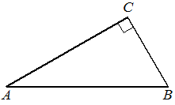

historical_editorial50
Предварительные разборы, внешнего эталона нет.
| В треугольнике угол равен , , . Найдите . |  |
{
"complete": true,
"included": true,
"exclusion_reasons": [],
"author_mode": "historical_shared_context",
"author_path": null,
"auditor_path": null,
"feedback_ref": null,
"source_run": "data/annotation/runs/2026-10-31-fipi-50x1"
}{
"task_id": "A33A46",
"solution_status": "solved",
"answer": "0,9",
"steps": [
{
"id": "s1",
"action": "Найти второй катет по гипотенузе и первому катету",
"result": "AC=√(AB²-BC²)=√(100-19)=9.",
"kc_ids": [
"k1"
],
"input_refs": [
"condition"
]
},
{
"id": "s2",
"action": "Вычислить косинус угла A",
"result": "В прямоугольном треугольнике cos A=AC/AB=9/10=0,9.",
"kc_ids": [
"k2"
],
"input_refs": [
"condition",
"s1"
]
}
],
"kc_candidates": [
{
"id": "k1",
"name": "Находить длину по теореме Пифагора",
"description": "Для прямоугольного треугольника найти неизвестную сторону по квадратам остальных."
},
{
"id": "k2",
"name": "Находить тригонометрическое отношение в прямоугольном треугольнике",
"description": "Правильно выбрать прилежащий/противолежащий катет и гипотенузу относительно заданного угла."
}
],
"methods": [
{
"id": "m1",
"name": "Найти прилежащий катет и взять его отношение к гипотенузе",
"step_ids": [
"s1",
"s2"
]
}
],
"warnings": []
}null
[
{
"task_id": "A33A46",
"local_id": "k1",
"canonical_id": "pythagoras",
"decision_basis": "explicit_editorial_operation_group",
"source_name": "Находить длину по теореме Пифагора",
"source_description": "Для прямоугольного треугольника найти неизвестную сторону по квадратам остальных.",
"evidence": [
{
"step_id": "s1",
"action": "Найти второй катет по гипотенузе и первому катету",
"result": "AC=√(AB²-BC²)=√(100-19)=9."
}
]
},
{
"task_id": "A33A46",
"local_id": "k2",
"canonical_id": "literal_be5764a81415",
"decision_basis": "identical_name_and_description_only",
"source_name": "Находить тригонометрическое отношение в прямоугольном треугольнике",
"source_description": "Правильно выбрать прилежащий/противолежащий катет и гипотенузу относительно заданного угла.",
"evidence": [
{
"step_id": "s2",
"action": "Вычислить косинус угла A",
"result": "В прямоугольном треугольнике cos A=AC/AB=9/10=0,9."
}
]
}
]{
"included": true,
"exclusion_reasons": [],
"source_policy_included": true,
"source_policy_exclusion_reasons": []
}